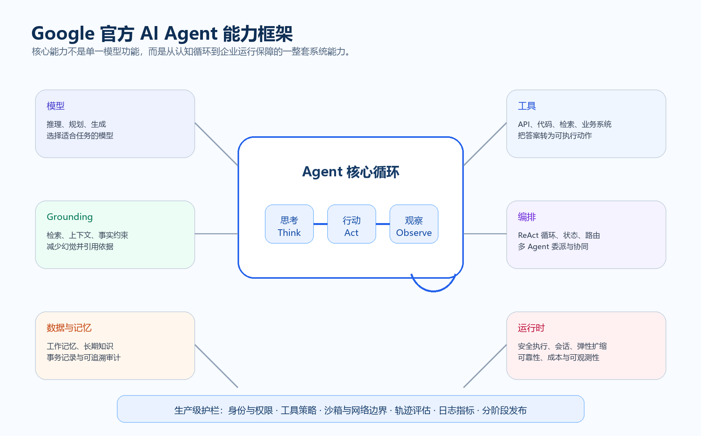
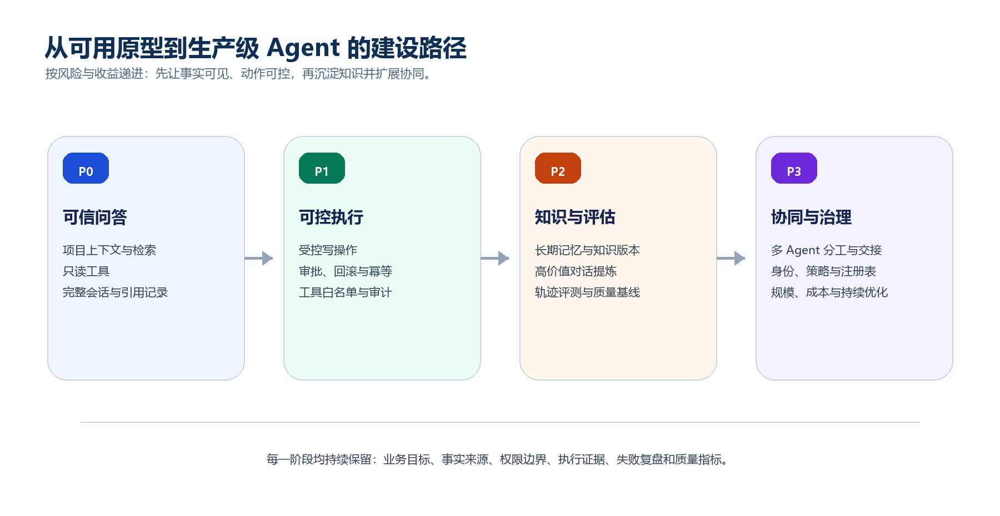

结论：Google Cloud 的官方材料把 AI Agent 视为一套完整系统，而不只是“能聊天的模型”。核心由模型、Grounding、工具、数据架构、编排和运行时组成；上线还必须同步建设安全、评估、观测、可靠交付与成本治理。
本文是对 Google 官方材料的综合整理，不等同于某一个 Google 产品或 API 的单独功能清单。
1. 六个构建块
Google Cloud 在 Core concepts of AI agents 中明确列出以下六项。

图 1 · 核心能力全景图
| 构建块 | 解决的问题 | 建设要点 |
|---|---|---|
| 模型 | 理解、推理、计划、生成 | 模型选择、系统指令、结构化输出和失败降级。 |
| Grounding | 可信事实与当前上下文 | 检索项目文档、代码和业务数据，显示来源与权限。 |
| 工具 | 将答案转为可执行动作 | 封装 API、Git、检索、工单等动作，配置审批和审计。 |
| 数据架构 | 知识、记忆、状态与证据 | 分层管理工作记忆、长期知识、业务数据和事务日志。 |
| 编排 | 多轮循环与协作 | 任务拆分、路由、委派、重试、交接与停止条件。 |
| 运行时 | 安全可靠地运行 | 隔离、身份、网络控制、弹性、观测、评估和成本管理。 |
2. 核心闭环
生产级 Agent 的行为可归纳为递归的 Think → Act → Observe 循环，由编排层保存状态并决定下一步。
思考 Think
理解目标、识别约束、拆分步骤，判断是否需要澄清或调用工具。
理解目标、识别约束、拆分步骤，判断是否需要澄清或调用工具。
行动 Act
通过受控接口调用检索、代码、业务 API 或委派其他 Agent。
通过受控接口调用检索、代码、业务 API 或委派其他 Agent。
观察 Observe
读取工具返回、识别异常、修正计划，必要时恢复或停止。
读取工具返回、识别异常、修正计划，必要时恢复或停止。
交付与迭代
更新状态，输出结果、依据和后续建议，保留可追溯轨迹。
更新状态，输出结果、依据和后续建议，保留可追溯轨迹。
3. Grounding、上下文与记忆
Grounding 不只是 RAG 文本。生产 Agent 需要分层处理实时上下文、可复用知识与动作证据。
工作记忆
保存当前会话目标、已读文件、已调用工具和未完成步骤。应限制大小，并支持恢复任务位置。长期知识与记忆
沉淀项目规范、架构、历史决策、用户偏好和经确认的高价值经验。必须可追溯、版本化、可撤销，并区分项目、团队和个人权限。事务与审计记录
保存写操作、Git 提交、工单更新、审批、失败与补偿。关联执行者、时间、输入、输出、权限和结果。实践提示：代码事实、需求事实和执行证据应该分开保存；模型可综合它们回答，但不能把推测写回事实库。
4. 工具调用与受控执行
- 每个工具定义输入、输出、权限、超时、幂等性和失败语义。
- 写入、删除、推送和发布等高影响动作采用分级批准，提供预览和确认。
- 使用最小权限身份，限制网络出口、文件范围和可调用工具。
- 对失败设计重试、去重、补偿与人工接管，不能只依赖模型再次尝试。
5. 多 Agent 协同
多 Agent 的价值在于专业分工与受控交接，不在于角色数量。
| 能力 | 用途 | 控制点 |
|---|---|---|
| 任务路由 | 按项目、专业、风险选择 Agent | 能力声明、模型与工具范围、超时、失败回退 |
| 委派与交接 | 分析、实现、测试和人工确认分工 | 输入摘要、事实来源、未完成项、责任归属 |
| 共享状态 | 多个 Agent 围绕同一任务推进 | 共享任务状态与私有推理分离；并发写入可控 |
| 互操作 | 连接外部 Agent、工具服务器和业务系统 | 标准协议之外仍需身份、权限、观测和内容安全 |
6. 生产级能力
| 领域 | 关键问题 | 证据或指标 |
|---|---|---|
| 身份与策略 | 谁在代表谁执行？能访问什么？ | Agent 身份、最小权限、白名单、审批记录 |
| 内容与数据安全 | 是否遭遇提示注入、工具投毒或泄露？ | 输入输出过滤、数据分级、密钥隔离、异常拦截 |
| 轨迹评估 | 工具和推理路径是否合理？ | 工具选择、澄清、恢复、人工接管和完成质量 |
| 可观测性 | 发生了什么，为什么，成本如何？ | Trace、耗时、错误、上下文大小、Token、单位成本 |
| 发布与可靠性 | 新版本如何安全进入生产？ | 离线评测、沙箱、灰度、回滚、SLO、限流 |
7. 建设路径建议
以下是基于 Google 官方能力框架形成的工程规划建议，不是 Google 对具体产品的实施要求。

图 2 · 从可信问答到多 Agent 治理
P0 可信问答P1 可控执行P2 知识与评估P3 协同与治理
- P0：项目上下文、事实检索、只读工具、引用与会话轨迹。
- P1：受控修改、Git 证据链、审批、回滚、幂等和错误处理。
- P2：高价值对话提炼、知识版本、评测集、轨迹分析与质量基线。
- P3：专业 Agent、委派交接、统一身份策略、Agent 注册与成本优化。
8. 对坤伴后续规划的映射
从项目、会话、工作画布、代码库、Git 操作和多模型接入能力出发，建议聚焦“可靠事实、可控行动、可沉淀知识、可协同交付”。这是规划推断，非 Google 官方评价。
- 建设有来源、版本、权限和有效期的知识对象。
- 提炼经确认的高价值对话为长期记忆，而非无差别保存。
- 把工具调用、文件差异、Git 提交、审批、测试和发布串为可回放证据链。
- 先定义能力、输入输出、权限与交接格式，再扩展 CPS、APS 等专业 Agent。
- 用典型任务集持续观察正确性、失败恢复、成本、时延与人工介入比例。
附录 · Google 官方来源
- Google Cloud · Core concepts of AI agents
- Google Cloud · What are AI agents
- Google Cloud Blog · A developer's guide to production-ready AI agents
- Google Cloud · What are agentic workflows
- Google Cloud documentation · Host AI agents on Cloud Run
- Google AI for Developers · Agents overview
整理日期：2026-09-13。Google 页面会随产品和文档更新而变化；实际落地应以目标产品的最新文档、权限和合规要求为准。